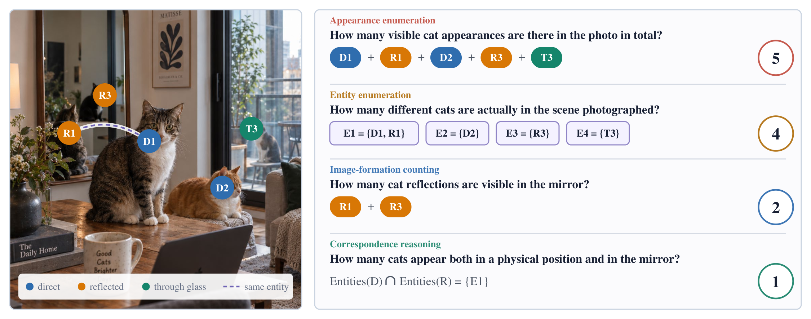
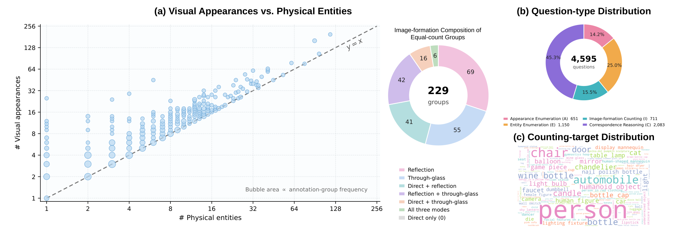

PhysCount: Do MLLMs Count
Visual Appearances or Physical Entities?
1Nanjing University 2NVIDIA

Abstract
Images reveal appearances, but counting often asks about physical objects. A single entity may be visible directly, in several reflections, or through glass, so detecting every visible occurrence does not determine how many entities are present. Existing visual counting benchmarks rarely separate these two operations. We introduce PhysCount, a benchmark for evaluating whether multimodal large language models (MLLMs) can distinguish what appears in an image from what physically exists in the scene. PhysCount contains 546 real-world images and 4,595 human-written questions organized into 651 target-specific groups. For each group, annotators locate the relevant appearances, label how each is observed, and identify appearances of the same entity. Four complementary question families test the enumeration of appearances, the enumeration of physical entities, image-formation-specific counting, and appearance–entity correspondence. We measure both accuracy on each family and the proportion of groups answered entirely correctly. Across 40 MLLMs, counting visible appearances is substantially easier than recovering the identities that connect them. Even the strongest model answers every question correctly in only 13.36% of groups. Performance declines when one entity produces many appearances or when its appearances cross observation modes. Higher image resolution improves access to visual evidence but brings limited gains in complete-group accuracy, whereas answering related questions jointly produces a marked improvement. These results expose a gap between recognizing what is visible and correctly recovering the physical entities behind those observations.
Benchmark Overview
Each annotation group fixes an image and a counting target. Four question families probe different quantities derived from the same appearance–entity annotation.
Appearance
Enumerate every visible occurrence, including reflections and appearances seen through glass.
Entity
Count physical objects, grouping appearances that depict the same entity when required.
Image Formation
Count reflected appearances or appearances observed through a transparent surface.
Correspondence
Reason about shared identities, visibility sets, intersections, and reflection multiplicity.

Explore the Annotations
The six examples below follow the order of the paper's supplementary material. Each includes the source image, appearance annotations, entity groups, and every question and answer. Select a point to inspect its physical identity.
Questions & Answers
Results on PhysCount
Explore all 40 evaluated models. Switch the metric to compare counting errors, aggregate performance, complete-group correctness, and conditional physical grounding. Select a model to inspect its full results.
From appearances to entities. Accurate appearance enumeration does not reliably carry over to counts defined by physical identity. Group-Acc measures how often every question in a group is answered exactly; Phys-Gnd evaluates the remaining question families after an exact appearance count.
Related questions help. Joint presentation improves Qwen3.8-27B's Score from 28.84 to 40.17 and Group-Acc from 7.37 to 23.96 at the same image resolution, with the largest error reductions in entity and correspondence questions.
BibTeX
@misc{lu2026physcount,
title = {PhysCount: Do MLLMs Count Visual Appearances or Physical Entities?},
author = {Lidong Lu and Jiaxin Lv and Liangrui Dong and Xinyi Mao and
Lidong Zou and Zhenquan Li and Tong Lu and Guo Chen},
year = {2026},
url = {https://physcount.github.io}
}